Next: AC circuit analysis
Up: summary
Previous: Basic Laws
- Loop-current method based on KVL
- Node-voltage method based on KCL
- Superposition principle
- Thevenin's theorem: convert any circuit to a voltage source
with 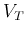 and 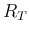 in series.
- Norton's theorem: convert any circuit to a current source
with 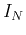 and 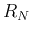 in parallel.
- Conversion between the voltage and current sources.
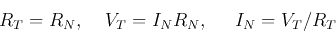
- Delta-Y conversion
- A two-port network can be modeled in terms of three parameters:
- Input resistance
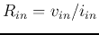 (Ohm's law)
- Output resistance
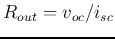 (Thevinin's theorem)
- Voltage source: 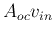 in series with 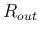, or a
current source:
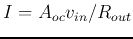 in parallel with .
where 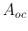 is the open-circuit gain.
Transistors, op-amps, and many other circuits that takes an input
and generates an output can all be examples of such a two-port network.
- The loading effact, the voltage 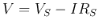 across load
 is
lower than the open-voltage voltage of the source.
is
lower than the open-voltage voltage of the source.
Ruye Wang
2019-05-27